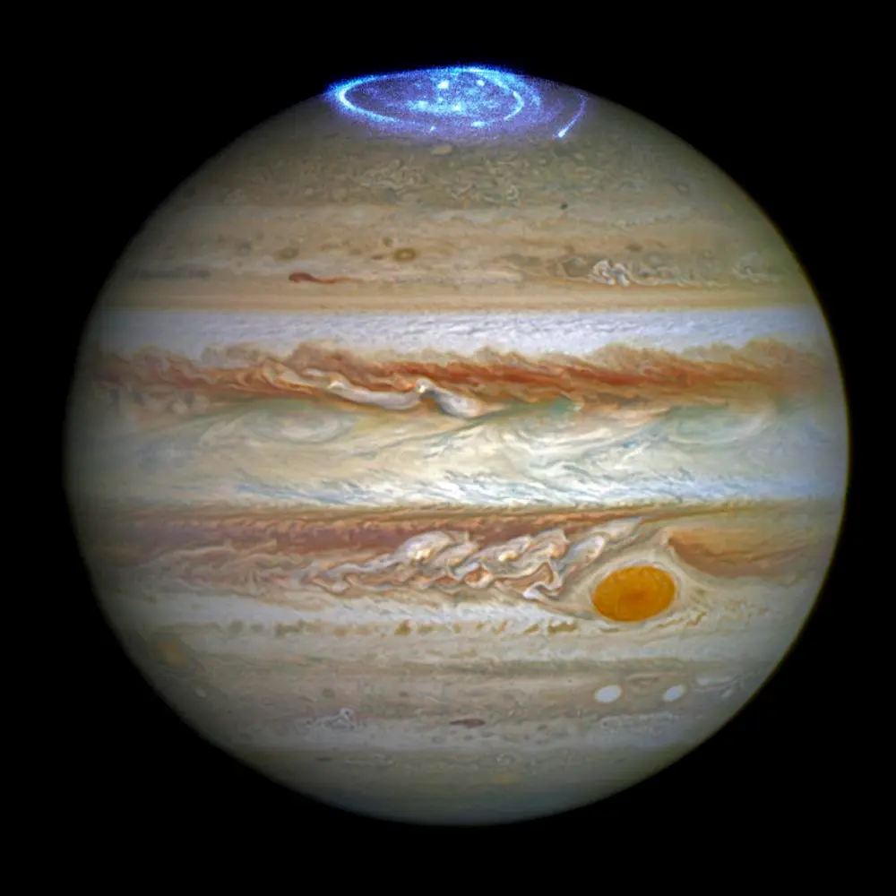

The **solar system** consists of the **Sun**, eight planets, their moons, dwarf planets, asteroids, and comets, all bound by the Sun’s gravity. The planets are divided into **inner rocky planets** (*Mercury, Venus, Earth, Mars*) and **outer gas giants** (*Jupiter, Saturn*) and **ice giants** (*Uranus, Neptune*). Earth is the only known planet to support life. The **asteroid belt** lies between Mars and Jupiter, while the **Kuiper Belt** and **Oort Cloud** contain icy bodies and comets. The Sun, at the center, provides light and energy, making life possible on Earth.

Names: Sun, Sol, Sól, Helios Distance(from Earth): 149,600,000 km Age: 4.6 billion years The Sun is a massive, glowing ball of hot plasma at the center of our solar system. Composed primarily of hydrogen and helium, it generates energy through nuclear fusion, converting hydrogen into helium in its core. This process releases an enormous amount of light and heat, which makes life on Earth possible. The Sun accounts for 99.8% of the total mass of the solar system and has a surface temperature of about 5,500°C (9,932°F). Its gravity keeps planets, moons, and other celestial objects in orbit. Despite being an average-sized G-type main-sequence star (Yellow Dwarf), the Sun is the most critical source of energy for our planet.

**Mercury** is the **smallest** and **innermost planet** in our **solar system**, orbiting closest to the **Sun**. It has a **thin atmosphere** composed mostly of oxygen, sodium, and hydrogen, making it unable to retain heat. As a result, Mercury experiences **extreme temperature fluctuations**, ranging from about **430°C (800°F)** during the day to **-180°C (-290°F)** at night. The planet’s surface is heavily **cratered**, resembling Earth's Moon, and lacks weather or geological activity. With a **short orbital period** of just **88 Earth days**, Mercury completes its year faster than any other planet. Despite its proximity to the Sun, it isn’t the hottest planet—that title belongs to **Venus** due to its thick atmosphere.

**Venus** is the **second planet** from the **Sun** and is often called **Earth's twin** due to its similar **size, mass, and composition**. However, Venus has an incredibly **thick atmosphere** made mostly of **carbon dioxide**, with clouds of **sulfuric acid**, creating an intense **greenhouse effect**. This traps heat, making Venus the **hottest planet** in our solar system, with surface temperatures reaching up to **475°C (900°F)**—hot enough to melt lead. Its surface features vast **volcanic plains**, **mountains**, and thousands of **volcanoes**, some potentially still active. Venus rotates **backward** (retrograde rotation) compared to most other planets, and one day on Venus lasts longer than its year. The planet's harsh conditions make it an extreme and fascinating subject for scientific study.
**Earth** is the **third planet** from the **Sun** and the **only known celestial body** to support **life**. About **71%** of its surface is covered in **water**, earning it the nickname **"the Blue Planet."** Earth has a **protective atmosphere** composed mainly of **nitrogen (78%)** and **oxygen (21%)**, which shields it from harmful **solar radiation** and helps regulate temperature. Its **magnetic field** further protects the planet from solar winds. Earth has a **diverse ecosystem**, with millions of species thriving in various environments. It orbits the Sun in about **365.25 days**, and its tilted axis causes the **seasons**. With a **rich biodiversity**, stable climate, and abundant natural resources, Earth remains a unique and vibrant home in the vastness of space.

**Mars**, often called the **"Red Planet,"** is the **fourth planet** from the **Sun** and the **second smallest** in our **solar system**. Its reddish appearance comes from **iron oxide** (rust) on its surface. Mars has the **largest volcano** in the solar system, **Olympus Mons**, and a massive canyon system, **Valles Marineris**. The planet's thin **carbon dioxide-rich atmosphere** makes it **cold** and **dry**, with surface temperatures averaging around **-63°C (-81°F)**. Evidence suggests that **liquid water** once flowed on Mars, raising the possibility of **past life**. Today, robotic missions like NASA’s **Perseverance Rover** are actively exploring Mars to study its geology and search for signs of ancient microbial life. Scientists are also investigating the potential for **human colonization** of Mars in the future.
Jupiter is the largest planet in our solar system, with a mass more than 300 times that of Earth. It is primarily composed of hydrogen and helium, classifying it as a gas giant. Known for its Great Red Spot, a massive storm larger than Earth that has been raging for centuries, Jupiter's atmosphere features powerful winds and colorful cloud bands. The planet has a strong magnetic field, nearly 20,000 times stronger than Earth's, and at least 95 known moons, including the four largest—Io, Europa, Ganymede, and Callisto—discovered by Galileo Galilei. Europa, in particular, is of great scientific interest due to the possibility of an underground ocean supporting life. Jupiter plays a crucial role in protecting the inner planets by deflecting or capturing space debris with its immense gravity.

The **Andromeda Galaxy** (M31) is the **nearest spiral galaxy** to our **Milky Way** and the **largest galaxy** in our **Local Group**. Located about **2.5 million light-years** away, it is home to **trillions of stars**, vast **star clusters**, and massive **nebulae**. Andromeda is on a **collision course** with the Milky Way, and scientists predict they will merge in about **4.5 billion years**, forming a giant elliptical galaxy. Visible to the **naked eye** from Earth in dark, clear skies, Andromeda serves as an important object of study for understanding **galactic formation** and **evolution**. Its bright core, spiral arms, and satellite galaxies make it one of the most **fascinating celestial objects** in the night sky.
Home Contact Us